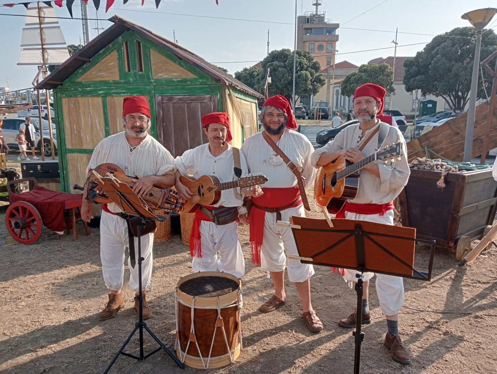

O projeto
Instrumentos que podiam
ter ido a bordo.
NAU canta o mar. Cantigas de trabalho, romances e canções nascidas a bordo, no cais e na praia — e toca-as com instrumentos que podiam ter feito a viagem: sanfona, flauta, tambor, concertina, viola e viola braguesa. Madeira, pele, corda e fole. Nada que precise de eletricidade para existir.
Antes de existirem motores, havia canto. Alar uma rede, puxar uma xávega, levantar ferro ou remar contra a corrente eram trabalhos que se faziam em conjunto e a compasso — e o compasso dava-o a voz. É deste chão que parte o grupo.
É um projeto raro. Há quem cante o mar e há quem toque instrumentos antigos, mas são poucos os que juntam as duas coisas com este critério: cada peça é procurada em recolhas, cancioneiros e gravações de terreno, e cada instrumento é escolhido pelo som que faria sentido naquele tempo e naquele lugar.
O repertório não se fecha numa só margem. Ao lado de cantigas de trabalho e romances da tradição oral portuguesa entram chamarritas açorianas, cantigas de barqueiros do Douro, canções de baleeiros e temas de autor ligados ao mar, incluindo versões em português de cantos marítimos de outras tradições europeias. O critério não é a origem: é o assunto. Água salgada, partida, trabalho, espera e regresso.
Os quatro músicos tocam com a sanfona, que dá o bordão contínuo a sustentar as vozes; a flauta, que abre e responde às frases cantadas; o tambor, que impõe ao conjunto a cadência de trabalho; a concertina, que puxa as partes mais rodadas; e a viola e a viola braguesa, que marcam o acompanhamento e a dança.
As quatro vozes cantam em conjunto na maior parte do alinhamento, com solos alternados e refrões abertos à participação do público. Não há música gravada, não há sequências: o que se ouve é o que está a acontecer à frente de quem escuta.
O grupo formou-se recentemente e apresentou-se publicamente pela primeira vez na Feira Pirata de Leça do Balio.
O grupo
Quatro músicos, de pé, em semicírculo

- Rui SantosSanfona e voz
- Carlos AbrunheiroFlauta, tambor e voz
- Alexandre BarrosConcertina, viola braguesa e voz
- João MadeiraViola e voz
- Duração50–60 minsem intervalo
- FormatosPalcoou concerto de proximidade com som próprio
- PúblicoTodas as idadesfeiras, festivais, museus, festas de terra
Ver e ouvir
Ao vivo
Feira Pirata de Leça do Balio
O alinhamento é construído como uma viagem: a partida do porto, o trabalho a bordo, a saudade de terra e o regresso. Entre cantigas, o grupo dá o contexto de cada peça — de onde vem, quem a cantava e para que servia — sem quebrar o fio do espetáculo.
Os quatro tocam de pé, em semicírculo, com ou sem palco, e com trajes de inspiração marítima. A disposição mantém o canto no centro e o público perto.
Repertório
O alinhamento
- Baleeiros de New Bedford Zeca Medeiros
- Hino dos Marinheiros sobre o Hino do Mineiro · música tradicional das Astúrias · letra de NAU
- Cantiga de Levantar Ferro música de Francisco Pimenta / Maio Moço · letra anónima, possivelmente do séc. XVII
- A Roupa do Marinheiro tradicional
- Rema música tradicional da Galiza · letra de NAU
- Ahoi! (Levai-me para o Mar) sobre Schipper, Ik Wil Varen · música tradicional dos Países Baixos · letra de NAU
- Cantiga de Trabalho música de José Mário Branco · letra de João Lóio
- Barco Falsete ou Canção dos Foliões das Festas do Espírito Santo, Açores · arranjo do GEFAC
- Farol de Montedor tradicional
- Chamarritas tradicional dos Açores · arranjo do GEFAC
Ficha técnica
O que o grupo precisa em palco
Documento de trabalho. Qualquer ponto pode ser ajustado por acordo prévio.
Palco e disposição
- Quatro músicos, todos de pé, em semicírculo aberto para o público. Sem cadeiras nem praticáveis.
- Da esquerda para a direita, na perspetiva de quem olha para o palco: Rui Santos (sanfona) · Carlos Abrunheiro (flauta, tambor) · Alexandre Barros (concertina, viola braguesa) · João Madeira (viola).
- Área mínima de 5 m de frente por 4 m de fundo, plana, nivelada e estável.
- Ao ar livre, cobertura obrigatória em caso de chuva ou de sol direto prolongado: os instrumentos são de madeira e a sanfona é muito sensível à humidade e ao calor.
- Sem backline. Todos os instrumentos e as estantes de partituras são trazidos pelo grupo.
Desenho de palco
{kind=link}
Vista de cima. Clique para abrir em tamanho real e imprimir.
Som
Formato de proximidade
- Para espaços pequenos e públicos até cerca de 150 pessoas, o grupo leva sistema de amplificação próprio.
- Nesse caso, a organização assegura apenas um ponto de energia junto ao local de atuação.
Com sistema da organização
- Sistema P.A. profissional adequado à sala ou ao recinto, operado por técnico da organização.
- Mesa com um mínimo de 12 canais, equalização de 3 bandas por canal e pelo menos 3 envios auxiliares.
- Reverberação de sala (hall ou plate curto) para as vozes.
- O conjunto é acústico: pede-se atenção ao ganho antes da realimentação.
Lista de canais
| Ch | Fonte | Captação sugerida | Notas |
|---|---|---|---|
| 1 | Voz — Rui Santos | Headset próprio ou SM58 com tripé | Grupo traz headsets |
| 2 | Sanfona — Rui Santos | Condensador (SM81 / e614) ou DI | Captação própria disponível |
| 3 | Voz — Carlos Abrunheiro | Headset próprio ou SM58 com tripé | Voz principal em várias cantigas |
| 4 | Flauta — Carlos Abrunheiro | Condensador ou SM57 | Pé de microfone, canal próprio |
| 5 | Tambor — Carlos Abrunheiro | SM57 ou e604 com pinça | Pousado no chão; sem tripé de bombo |
| 6 | Voz — Alexandre Barros | Headset próprio ou SM58 com tripé | |
| 7 | Concertina — Alexandre Barros | Condensador ou par de clip mics | Pé de microfone à altura do peito |
| 8 | Viola braguesa — Alexandre Barros | DI ou condensador | Troca com a concertina durante o alinhamento |
| 9 | Voz — João Madeira | Headset próprio ou SM58 com tripé | |
| 10 | Viola — João Madeira | DI (transdutor próprio) ou condensador |
Dez canais ocupados: cada músico leva um canal de voz e um canal por instrumento. A numeração segue o palco, da esquerda para a direita.
Monitorização, energia e luz
- 3 a 4 monitores de chão ao longo do semicírculo.
- Mínimo de 2 misturas independentes; 3 é o desejável. Prioridade para as vozes, seguidas de sanfona e cordas.
- 2 tomadas de 220 V / 16 A no palco, com ligação à terra.
- Iluminação frontal de tonalidade quente, uniforme sobre os quatro músicos, com luz suficiente para leitura das estantes.
- Evitar projetores dirigidos diretamente aos olhos dos músicos.
Tempos e acolhimento
- Chegada e descarga 2h00 antes do início. Montagem 45 min. Passagem de som 30 min, concluída até 1h00 antes da abertura ao público. Desmontagem 30 min.
- Camarim reservado e fechado à chave para 4 pessoas, com espelho, cadeiras e cabides — o grupo muda de roupa no local.
- Água à temperatura ambiente para 4 pessoas, no camarim e em palco.
- Um lugar de estacionamento reservado junto ao acesso de carga.
- Local seco e vigiado para guardar os instrumentos antes e depois da atuação.